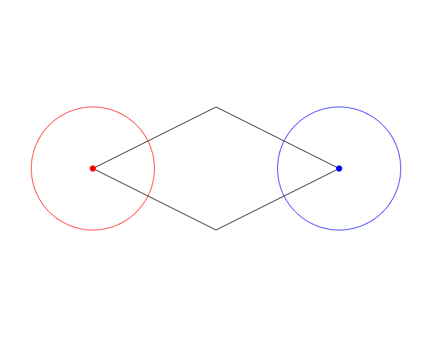
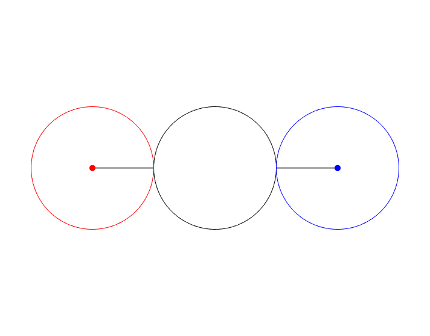
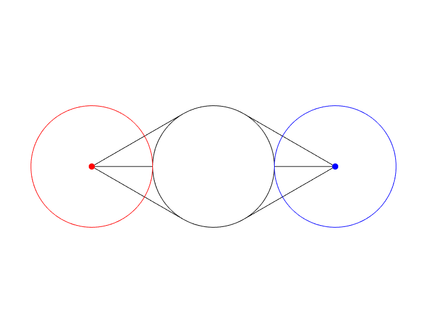

Paul L. Bailey, Ph.D.
Course Material 0410
What is "good" about Good Friday? You get an interesting geometry problem.
Two people are 12 feet apart. What is the shortest distance they can
walk to switch places, while observing correct ``social distancing'' guidelines?
|

|
|

|
|

|
Source: fivethirtyeight